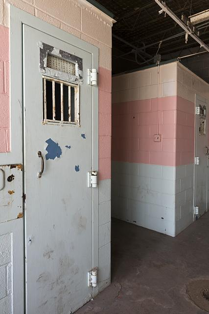

Lifeafter Prison
in the Age of
The Internet
Platforms like Reddit and Youtube
have opened a window into the lives and
experiences of ex-offenders and their struggle
to re-enter society, giving them a way to share their
stories, and allowing everyone else a look into their lives.
A photo of Folsom State Prison, one of the first maximum security prisons in the country, it now houses more than 2,300 prisoners, well over it's designed capacity of just over 2,000. (Image: California State Library, 1915)
 |
| Joe P. Guerrero, creator of the AfterPrisonShow was released from prison 2 years ago and has since established a popular channel featuring many videos with more than a million views, and half a million subscribers. (Image: Twitter) |
It is an oft cited fact that the United States has more people in prison per capita than any other industrialized nation. Since 1970 the incarceration rate in the U.S. has more than tripled, with many blaming a swath of issues from the “war on drugs,” to mandatory minimum sentences, to counter-productive “tough on crime” political rhetoric, or all of the above. In the years since its peak in 2008 the U.S. has seen a slight reduction in its incarceration rate (about 13%), but the situation remains extremely problematic in the eyes of many.
With overcrowded prisons, many of which have been observed to be inhumane, filled by what appears to be a racially prejudiced justice system that incarcerates Blacks at more than five times the rate that it does Whites, there seems to be no end of controversies spawned by the U.S. prison system. But most of these well-known controversies have to do with the prison system itself and the people currently inside it, but what happens when they become ex-prisoners?
It may be tempting to think of those released from prison as having paid they’re debt to society for whatever wrong they've done. But the truth is that going to prison or even jail can follow you around for the rest of your life, and re-entering society is no simple task, and ex-offenders often find themselves without the necessary resources to deal with the often-crippling effects of having been to prison.
But in recent years many former prisoners have found interesting new ways to cope with the issues they face by using the internet. In the last 5 years Reddit and YouTube in particular have become the home of a substantial amount of content made by and for ex-offenders, providing a window into their lives after their release from prison, as well as providing more insight into what it was like when they were inside the system.
"The support I got from my family, without that I would probably be back in prison right now."
The difficulties readjusting to life outside the prison system are myriad and vary greatly from person to person. The testimonies one can find online often paint the picture of an extremely stressful life. One Redditor, going by the username throe342 in a post titled “Just got out of prison and I owe SO much money…” details his experience trying to get a job after release. “I actually got a job offer 2 weeks after moving and was so excited to start. They asked about my background and I was totally honest with them. After some discussion, they still wanted to hire me but then a few days later I got a call saying HR wouldn’t allow it. I was pretty beat up.” He explains. “Over the next few months I got a few interviews and even job offers, but any time the background check came up I was denied. The only thing worse than not having a job is knowing you have the skills to get hired but something like this holds you back.”
In the updated post the Redditor explains that he eventually was able to find a job, but only after what seemed like a miraculous break, and not before having a number of mental breakdowns as a result of the stress.
These kinds of experiences are not universal, but they are very common. Even in the comments of the post there is someone who claims to be in a similar situation having been let go from a job he already had once his background check came back, “Yesterday they let me go because the check came back. It's nice to hear its possible, because I've almost given up.”
But even once an ex-offender gets an offer there can still be job related grief. Take for example Bilal Chatman, who was given a 150 year to life sentence under California’s “Three Strikes” law for selling drugs. He was released after said law was amended in 2012, and was lucky enough to find a job that he loves. But he was put in a situation where he nearly had to choose between keeping his job and attending mandatory meetings with his probation officer, meetings without which he could be charged and sent back to prison. Chatman detailed this in an interview for the 2016 PBS documentary The Return, an interview that was featured on LastWeekTonight, a show on HBO with an extremely large YouTube following.
LastWeekTonight's segment about Bilal Chatman.
“He (the probation officer) got off every day around 4, and I didn’t get off until 4:30… So, I said, 'you know, can I come in early?' He said, ‘No you can’t come in early.’ So, I said, 'okay then can I come a little latter, can I get there at like 5?'' He said, 'No, no, I don’t stay here and wait for you, I’m not going to wait for you.’” Chatman recounts. “I don’t want to lose my job, these are the things that I’m supposed to be doing, this is what I’m out here for, I’m working to be a productive member of society.”
Luckily, Chatman would go on to resolve the issue and was able to keep his job as he revealed in an interview with the host of LastWeekTonight John Oliver. An interview in which he also revealed a few things that made it easier for him to find that job, which prompted a fit of laugher from the audience.
Oliver: “When you were applying for jobs you listed your previous employer as, what?”
Chatman: “State of California.”
Oliver: “State of Calofornia, that’s technically true.”
Chatman and Oliver are not the only ones to use humor to talk about the issues facing ex-offenders. On YouTube a man by the name Joe P. Guerrero has established a very popular channel devoted to talking about his 7-year stay in prison and what it’s like trying to make it in the outside world. But this “AfterPrisonShow” takes a much more humorous approach to talking about the subject than many of the heavier stories told on Reddit and elsewhere, with video titles like “5 Nastiest Things I Saw in Prison,” and “10 Worst Types of Prisoners,” seeming making fun of both the internet’s love of list features while recounting some of the absurd situations he found himself in while in prison.
Joe Guerrero recounts the bizzare and harrowing tale of a young inmate with a very problematic tatoo.
None of this is to say however that channels like his are devoid of serious subject matter. In a video entitled “Going to Jail” Guerrero tours a county jail in Mississippi giving the audience a taste of what it might be like if they ever went there. During the video he recounts the feelings of many inmates when he reaches the empty recreation yard, “When you’re locked up in a facility like this, locked up all day long, each little bit of freedom that you can get, just out on a place like this; a concrete slab, that’s going to mean a lot to you. Being able to breath fresh air, having a moment to not have to breath that stagnant air that you’ll be breathing while in one of these cell blocks.” he says, obviously having felt that way himself not so long ago. These kinds of videos, as well as the written accounts found online provide a much-needed window into the lives of inmates past and present. But self-reporting isn’t the only way the internet has helped shed light on the experiences of these individuals. There is a great deal of born-digital journalistic and historical work that has been done on the prison system as well.
Joanne DeCaro, a former student of Northeastern University, now a professional photographer) published a thesis on the county jail system in Los Angeles, and as part of it interviewed a number of formerly incarcerated individuals which she published in an online exhibition called “Angelenos Incarcerated.” Of course, this project was ultimately constructed on DeCaro own initiative and not the former prisoners themselves, but it remains a demonstration of how the internet can be used to tell the stories of those whose lives have been affected by their incarceration. And some of these stories are very troubling. Edward Hauffman, one of the main subject of DeCaro's project, had been in and out of the LA county jail system for much of his life described it as “hell on earth.”
One of many videos by Joanne DeCaro, featuring Edward Hauffman.
“The conditions are horrible. It’s over populated, they have these dormitories that were built for 60 people when they’re housing 90 to 100 people… There are bugs running around everywhere. It’s very hard to sleep,” he explained, going on to say, “people refer to it as gladiator school, it’ll break ya, or it’ll build ya, and that’s all there is to it.”
Hauffman appears to have been among those who were built, successfully making the adjustments necessary for re-entering the free world after his release in 2007. But he is convinced that he is one of the lucky ones. “The support I got from my family, without that I would probably be back in prison right now.” he explained when recounting how his family helped him get his first legitimate job. “They make it very difficult to for anyone who has a (criminal) history to get a job or do anything… I know people who have got out and have sent in job applications everywhere and they never get a call back.”
And for other ex-prisoners, even those who make it in the free world, the memories of what they experienced in prison will never go away, and some of those memories are truly horrific.
|  |
| A solitary confinement cell at West Virginia State Penitentiary. Cells like these are still used to punish prisoners for anything from fighting, to smuggling contraband. Depending on the prison, a prisoner may spend days, weeks, or even months inside one of these cells with little to no social contact whatsoever.(Image: Library of Congress) |
Another Redditor named ThrowItAwayAnyway having spent only 8 months in prison emerged having witnessed serious abuse on the part of prison guards in his prison’s medical ward which he talked about in the comments of his own post, “Imagine this: A very scared and very covered in mace mentally ill man is crouched in the corner of a cell, that (since it has no toilet because it's the padded cell) has sh*t and piss all over it. A riot team rushes in with full gear and shields and batons, and beats the ever-living crap out of him while he just whimpers as they scream ‘Stop resisting!”
Of course, it’s difficult to talk about prison in general without mentioning another source of trauma; sexual assault. There are some accounts of it online, but at least on Reddit the vast majority of responses when asked about it seem to insist that reports about it's pervasiveness are exaggerated. Though some posts also acknowledge that this may be because they were incarcerated in lower-security facilities and most of the inmates there were serving sentences of less than 10 years. It’s also very probable that those who go through or even witness such traumatic things are going to be less likely to post about it online.
Another potentially crippling experience many have in prison is solitary confinement, accounts of which can also be found on Reddit. While many posts by ex-offenders will say that solitary confinement works in some cases, and some even justify it by pointing out the need for some kind of punishment for bad behavior, virtually none insist that it doesn’t have devastating effects on a lot people. Redditor Tex171, also in the comments of his own post claims to have spent time in a death row cell-block consisting exclusivly of solitary confinement cells, and what he saw stayed with him since his release. “I've seen men kill themselves, light themselves on fire, mutilate themselves, run into walls, lose the ability to talk etc.” He writes. “When I say I still hear screams at night, I really do. Bloodcurdling screams of inmates losing their minds will stay with me forever. Being on the DR (Death Row) unit for a long while, I saw first-hand what the hopelessness of solitary confinement can do to the human spirit.”
It’s hardly insightful to point out that experiences like this can have devastating effects on a person’s mind. And while many in the prison system are fortunate enough to have avoided such trauma, those who haven’t have just one more burden to add to what can potentially be an overwhelmingly stressful readjustment process.
"I'm certainly trying to be a better person, but I know countless others who come out worse than when they went in. Prison will really f*ck your head up."
Stories like those told by Redditors can be disturbing and eye-opening, potentially creating empathy in those who want to learn about what it is like for men and women who have endured such trauma. But there is a potential problem with the internet as a tool for ex-offenders who want to tell their stories, which is that using it requires some amount of technological literacy.
When someone is released from prison, especially if it is a very long sentence, they can have significant trouble adjusting to the technology that has developed while they were incarcerated. Joe Guerrero of the AfterPrisonShow, calls humorous attention to this in his video “2016 my first year out of prison” in which he depicts himself trying to use a modern cellphone by talking into a keyboard.
Of course, the internet cannot truly be considered a recent invention, but if you’ve been in prison for 5 years or longer without access to modern everyday technology, adjusting to it can be overwhelming, and that’s not just about working a cell phone, but adjusting to a culture that is more connected by the internet than ever before. And for those lucky enough to find a job like Hauffman and others, this may not be something they have much time for.
Michael Santos writing for Gizmodo recounts reading about technology in prison where he served a 25-year sentence. “I read extensively during my term of incarceration, but reading about technology felt a bit like reading about typing. Regardless of how much I read, I wouldn’t grasp the power of technology until I started using it,” he explained. “Forget the power, I don’t even understand the language of technology. For example, I never understood what people meant when they spoke of a ‘browser.’” And as one can imagine it might be difficult to manage a Reddit conversation if you don’t understand what a browser is.
Joe Guerrero demonstrating what it's like trying to work a cellphone after 7 years in prison. (Image: Youtube)
Some might say that these difficulties are a result of these former inmates’ own actions, and that they should see these issues as consequences of their own actions. (And there are a number of comments out there to that effect) But this idea seems in conflict with the supposed objective of the U.S. prison system; to rehabilitate, not just punish. While this idea that these difficulties are deserved is sometimes expressed even by the ex-cons themselves, it is rare to find a post or comment that speaks positively about the rehabilitative experience of being in prison. Even those who claim that being in prison helped them learn their lesson, tend to question the effectiveness of the system all together. Joe Guerreo in his own Reddit post when asked if prison makes better people, or better criminals he was conflicted, “It’s something I'm trying to figure out myself. I mean, I'm certainly trying to be a better person, but I know countless others who come out worse than when they went in. Prison will really f*ck your head up.” He went on to explain that ultimately the experience is what you make of it. But many others online insist that it’s as broken as a system can get.
Thankfully though, what can be found online is by no means restricted to just emotional venting. Many ex-offenders turn to platforms like Reddit to ask for help getting started with their lives in the outside world. And there are even online communities like the Reformed Ex-Cons Subreddit made by and for ex-prisoners trying to make it in the free world. With some posts devoted to empowering ex-cons to take control of their lives, and others to listing potential employers known to accept ex-felons. Some even recommend avenues for getting mental health treatment that may have gone untreated by, or been exacerbated by the prison system.
None of this is to say that support programs don’t exist, and that there aren’t resources being supplied by the system. Nor do these observations prove that ex-prisoners shouldn’t face any kind of repercussions that follow them into the free world post-release, but in many of the most popular AMA’s found on Reddit, there seems to be a flood of people (presumably most of whom have never been incarcerated themselves) expressing sympathy for the recently released, and a deep dissatisfaction with the way the prison system is designed. There is a fair amount of the abuse one commonly associates with online platforms, but at least in the most popular threads such abuse appears to be soundly out-weighed by expressions of earnest curiosity or sympathy.
It could be that as the years go on the internet will serve as a way for ex-prisoners to express themselves and talk about the problems that ail them, even with the technology barrier. Reform movements may be wise to take advantage of the power this increasingly ubiquitous part of life in the U.S. holds. Because for people like Joe, Edward, Michael, and the countless others on YouTube, Reddit and across the internet, the sentences they faced years ago still haunt them.